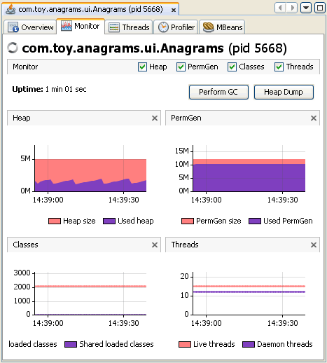

애플리케이션 모니터링
VisualVM은 애플리케이션별 탭에서 로컬및 원격 애플리케이션을 위한 데이터를 제공한다. VisualVM에서 애플리케이션을 열면, 각각의 애플리케이션은 메인창에서 새로운 탭으로 열린다. 여러개의 애플리케이션 탭을 열수도 있다.
애플리케이션 모니터링
VisualVM을 사용해서 로컬 애플리케이션을 모니터링하고 힙 메모리와 쓰레드 상태 그리고 자바 가상머신에 로드된 클래스들에 대한 실시간 데이터를 볼수 있다. 애플리케이션을 모니터링하는 것은 약간의 오버헤드를 야기하고 해당 기간동안 계속 유지된다.
모니터링 데이터는 다음의 그래프 형태로 표시된다.
- Heap. Heap그래프는 힙 메모리의 총 크기와 현재 얼마나 사용하고 있는지를 표시한다. 자바 기반의 애플리케이션은 java.lang.Runtime.totalMemory() 와 java.lang.Runtime.freeMemory() 메서드 호출을 통해 이 값들을 얻을수 있다.
- PermGen. PermGen그래프는 특정기간동안 permanent generation 메모리 영역의 변경추이를 보여준다. permanent generation은 클래스와 메서드 객체가 저장되는 힙 메모리 영역이다. 애플리케이션이 매우 많은 수의 클래스를 로드하면, permanent generation영역은 -XX:MaxPermSize옵션을 사용해서 크기를 늘려야 한다.
- Classes Classes그래프는 로드된 클래스와 공유된 클래스의 총 갯수의 개요를 보여준다.
- Threads. Threads그래프는 애플리케이션의 JVM에 있는 살아있거나 데몬형태의 쓰레드의 수에 대한 개요를 보여준다. 특정시점의 애플리케이션 쓰레드에 대한 데이터를 얻거나 보기 위해 쓰레드 덤프를 생성할 수도 있다. 쓰레드의 작동에 대해서는 다음 문서를 참고하자.
모니터링 탭은 몇가지 추가기능을 실행하기 위한 버튼을 가지고 있다.
- Perform GC. 가비지 컬렉션을 즉시 실행하기 위해 Perform GC를 클릭
- Heap Dump. 힙덤프를 생성하기 위해 Heap Dump를 클릭. 힙덤프를 생성하면, 애플리케이션탭 아래 힙덤프를 여는 탭이 나타난다. Applications창의 애플리케이션 노드아래 힘덤프 노드가 나타난다. 힙덤프를 활용하기 위해, 다음 문서를 참고하자.